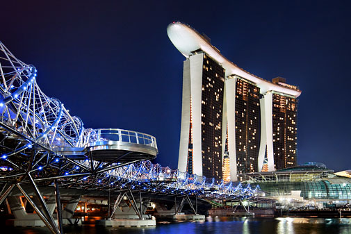

|
DJ Tours and Travels |
Welcome To Singapore/Malaysia
Singapore is truly one of the most sought after travel destinations in the world. Embark on this magical sojourn to Singapore - a beautiful mosaic of vibrant cultures and eclectic lifestyles.
Malaysia will invigorate and surprise you, from its picture-perfect beaches and sumptuous cuisine to adventure activities and eclectic cities.
8 Days/7 Nights Itinerary
| |
Day 1 : Kuala Lumpur - Genting Highlands
Arrive in Kuala Lumpur. On arrival proceed to Genting Highlands by coach. En route visit Batu Caves. Travel by Asia's longest and fastest Cable car to Genting Highlands.
Try your luck at famous Casino in the evening.
Please Note: Pack a separate handbag for Genting Highlands. Light woolens are required at Genting. Casino dress code for Men - Trouser, Collar Shirt / T-shirt, closed Shoes; for Women - Saree, Punjabi or western formal.
|
| |
Day 2 : Genting Highlands - Kuala Lumpur
Enjoy Indoor Theme Park alongwith Snow World and Ripley's Believe it or not. Enjoy shopping at Genting.
Later proceed to Kuala Lumpur by coach. On arrival city orientation tour includes Dataran Merdeka Square, National Mosque, Cricket Field, High Court Building.
Take a photo stop at King's palace. Visit National Monument and Suria KLCC which is located at the feet of the Petronas Twin Towers, photo stop at Petronas Twin Towers.
Enjoy magnificent view of city from the Observatory Deck of the K. L. Tower by night. |
|
| |
Day 3 : Kuala Lumpur - Sunway Lagoon - Putrajaya - Kuala Lumpur
Visit Sunway Lagoon. Enjoy the most spectacular adventure and never ending excitement of rides and water slides at Sunway Lagoon's - Waters of Africa. Free time for shopping at Sungie Wang Plaza.
Visit Putrajaya - the Administrative capital of Malay sia.
Please Note: Carry round neck T-shirt and shorts / short or long tights / swimsuits with towel for Sunway Lagoon water rides. |
Day 4 : Kuala Lumpur - Singapore
Proceed to Singapore by coach. On arrival visit Garden By the Bay - A Spanning 101 hectares, this superpark is home to over a quarter of a million rare plants.
Visit Flower Dome, Cloud Forest Dome, take a walk on the skyway and enjoy the sound and light show at The Supertree grove, enjoy walk on the skyway and the sound light show.
|
|
 |
Day 5 : Singapore
City orientation tour includes the Parliament House, Suntec City, Fountain of Wealth, City Hall, Orchard Road and Swiss-the tallest hotel in Singapore. The statue of Sir Thomas Stamford Raffles.
Enjoy Singapore river boat ride and take a photo stop at Merlion. Free time for shopping at Little India. Experience the Cable Car ride from Mt. Faber to Sentosa Island. Visit Images of Singapore - The Pioneers of Singapore, The Surrender Chambers, Festivals of Singapore and wax works.
Visit Marine LifePark - the largest oceanarium in the world, which has the world's largest viewing panel and contains 100,000 marine animals of over 800 species.
Enjoy the 'Wings of Time' - a spectacular night show set outdoors against the backdrop of an open sea in the evening. Take a mono-rail ride.
|
|
| |
Day 6 : Singapore
Visit Universal studios at Resorts World to enjoy various activities at Lost World, Far Far Away, Madagascar, Hollywood, New York, Sci fi city & Ancient Egypt.
|
 |
Day 7 : Singapore
Visit the Observatory deck on top of the Marina Bay Sands Sky Park. Experience the Singapore Flyer ride offering the breathtaking panorama of the shimmering Marina Bay waterfront and historical landmarks dotting the city skyline. Visit Night Safari in the evening.
Take a Tram Ride, see Creatures of Night Showand enjoy dinner in the unique environment of Night Safari.
|
 |
Day 8 : Departure from Singapore
Board the flight to your hometown. Tour Concludes.
|
Meals on Tour :
Day 1 : Dinner
Day 2 - 7 : Breakfast, Lunch and Dinner
Day 8: Breakfast
Extra Topping :
1) Coconut water / tea / coffee at Batu caves
2) Tea / Coffee after visit to Sunway Lagoon
3) Soft drink at National monument, Kuala Lumpur
4) Tea / Coffee during Kuala Lumpur to Singapore travel
5) Tea / Coffee / Soft drink at Sentosa
6) Soft drink / Ice cream at Resorts World
7) Lunch at Sunway Lagoon
8) 500 ml water bottle per day per person in Malaysia
Our Speciality :
Enjoy multi cuisine meals at Genting Highlands
Caring Tour Manager throughout the tour.
Reporting & Dropping for Joining & Leaving :
Day 1 : At the Airport/Hotel/Sight seeing place (Please re-confirm with our tour consultant 8 days prior to the tour).
Day 8 : Tour concludes at the Hotel/ Airport- as per scheduled group flight.
! EARLY BIRDS GET DISCOUNTS !
TOUR PACKAGE : Rs.1,20,000 **Terms and Conditions Apply